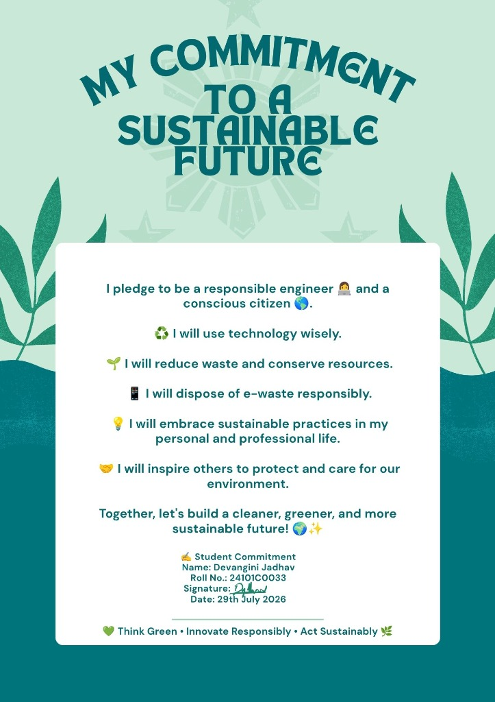

01
recycling
MEASURE BEFORE I BUILD
Every project starts from real data on material impact, not assumptions. Precision analytics over guesswork.
Every device we abandon carries a debt. This is a commitment to pay it down — through the work I ship, the data I publish, and the standard I hold every assignment to.
Every project starts from real data on material impact, not assumptions. Precision analytics over guesswork.
Assignments, findings, and prototypes are logged to the Dashboard as they're completed — not polished retroactively.
Dark surfaces, minimal assets, no bloated frameworks. The interface should cost as little as the ideas behind it.
Findings are written for someone outside the field — activism only works if the data is legible.
Signed commitment poster by Devangini Jadhav (Roll No.: 24101C0033).
